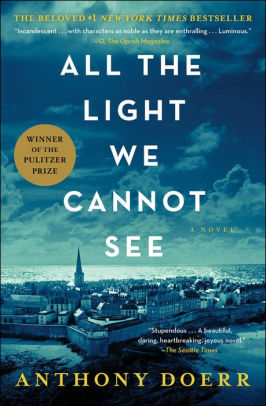

.
- Title: All the Light We Cannot See
- Author: Anthony Doerr
- Price: $9.50
- Reviews
Add to Cart
Add to Wishlist
Add to Cart
Add to Wishlist
Synopsis:
Marie-Laure lives with her father in Paris near the Museum of Natural History, where he works as the master of its thousands of locks. When she is six, Marie-Laure goes blind and her father builds a perfect miniature of their neighborhood so she can memorize it by touch and navigate her way home. When she is twelve, the Nazis occupy Paris and father and daughter flee to the walled citadel of Saint-Malo, where Marie-Laure’s reclusive great-uncle lives in a tall house by the sea. With them they carry what might be the museum’s most valuable and dangerous jewel.
In a mining town in Germany, the orphan Werner grows up with his younger sister, enchanted by a crude radio they find. Werner becomes an expert at building and fixing these crucial new instruments, a talent that wins him a place at a brutal academy for Hitler Youth, then a special assignment to track the resistance. More and more aware of the human cost of his intelligence, Werner travels through the heart of the war and, finally, into Saint-Malo, where his story and Marie-Laure’s converge.